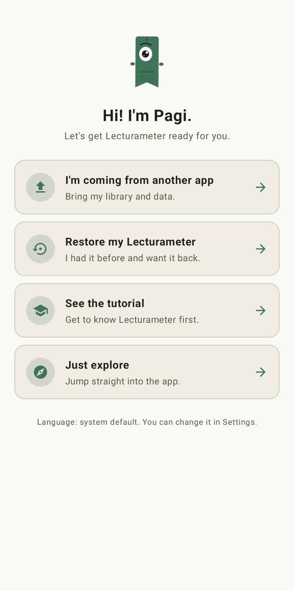
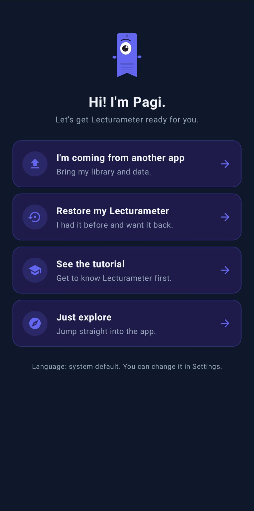
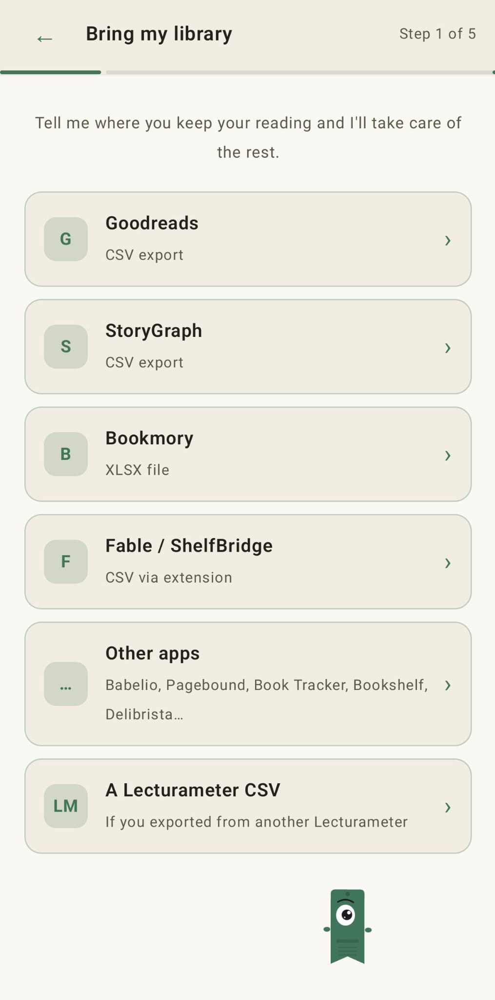
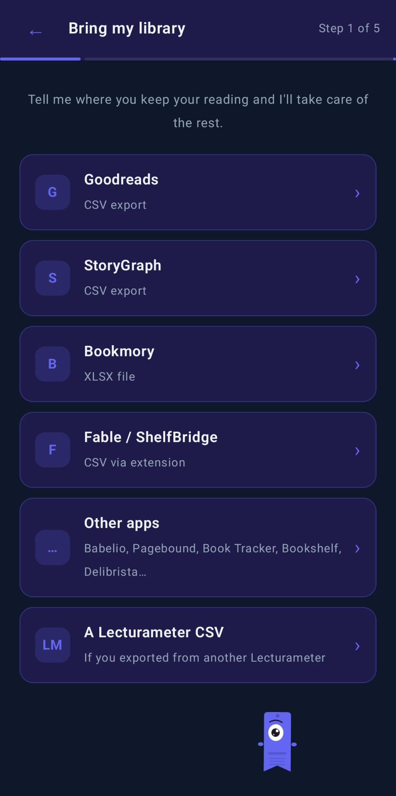

ਬਲੌਗ · 2026-09-14
ਆਪਣੀ Goodreads (ਅਤੇ StoryGraph, Bookmory, Fable…) ਲਾਇਬ੍ਰੇਰੀ ਨੂੰ Lecturameter ਵਿੱਚ ਕਿਵੇਂ ਲਿਆਉਣਾ ਹੈ
Lecturameter Goodreads, StoryGraph, Bookmory, Fable/ShelfBridge ਅਤੇ ਕਈ ਹੋਰ ਪੜ੍ਹਨ ਵਾਲੀਆਂ ਐਪਾਂ ਦੇ ਐਕਸਪੋਰਟ ਪੜ੍ਹਦਾ ਹੈ। ਇਹ ਪੋਸਟ ਹਰ ਇੱਕ ਬਾਰੇ ਦੱਸਦੀ ਹੈ।
ਤੁਹਾਡੀ ਲਾਇਬ੍ਰੇਰੀ ਕਿੱਥੇ ਹੈ
ਜੇ ਤੁਸੀਂ ਪਹਿਲਾਂ ਹੀ ਕਿਤੇ ਹੋਰ ਆਪਣਾ ਪੜ੍ਹਨਾ ਦਰਜ ਕਰਦੇ ਹੋ ਅਤੇ ਇਸਨੂੰ ਲਿਆਉਣਾ ਚਾਹੁੰਦੇ ਹੋ, ਤਾਂ Lecturameter ਜ਼ਿਆਦਾਤਰ ਮਸ਼ਹੂਰ ਟਰੈਕਿੰਗ ਐਪਾਂ ਦੇ ਐਕਸਪੋਰਟ ਮੰਨਦਾ ਹੈ: Goodreads, StoryGraph, Bookmory, Fable (ShelfBridge ਐਕਸਟੈਂਸ਼ਨ ਰਾਹੀਂ) ਅਤੇ ਕੁਝ ਛੋਟੀਆਂ ਐਪਾਂ। ਇਹ ਪੋਸਟ ਹਰ ਸਰੋਤ ਲਈ ਐਕਸਪੋਰਟ ਦਾ ਕਦਮ ਦੱਸਦੀ ਹੈ, ਤਾਂ ਜੋ ਤੁਸੀਂ ਜਿਹੜੀ ਵਰਤਦੇ ਹੋ ਉਹ ਚੁਣ ਕੇ ਕਦਮਾਂ ਦੀ ਪਾਲਣਾ ਕਰ ਸਕੋ।
ਇੱਥੇ ਕਿਸੇ ਵੀ ਚੀਜ਼ ਲਈ Lecturameter ਖਾਤੇ ਦੀ ਲੋੜ ਨਹੀਂ। ਫਾਈਲ ਤੁਹਾਡੇ ਫ਼ੋਨ ਉੱਤੇ ਰਹਿੰਦੀ ਹੈ।
ਆਯਾਤ ਵਿਜ਼ਾਰਡ
ਜਦੋਂ ਤੁਸੀਂ ਪਹਿਲੀ ਵਾਰ Lecturameter ਖੋਲ੍ਹਦੇ ਹੋ, Pagi ਪੁੱਛਦਾ ਹੈ ਕਿ ਤੁਸੀਂ ਕੀ ਕਰਨਾ ਚਾਹੁੰਦੇ ਹੋ। ਵਿਕਲਪਾਂ ਵਿੱਚੋਂ ਇੱਕ ਹੈ «ਮੈਂ ਕਿਸੇ ਹੋਰ ਐਪ ਤੋਂ ਆ ਰਿਹਾ ਹਾਂ»। ਉਹ ਚੁਣੋ ਅਤੇ ਤੁਸੀਂ ਆਯਾਤ ਵਿਜ਼ਾਰਡ ਵਿੱਚ ਪਹੁੰਚ ਜਾਂਦੇ ਹੋ।


ਵਿਜ਼ਾਰਡ ਸਰੋਤਾਂ ਦੀ ਇੱਕ ਸੂਚੀ ਹੈ। ਤੁਸੀਂ ਜਿਹੜਾ ਵਰਤਦੇ ਹੋ ਉਸ ਉੱਤੇ ਟੈਪ ਕਰਦੇ ਹੋ, ਉਸਨੂੰ ਫਾਈਲ ਦਿੰਦੇ ਹੋ, ਅਤੇ Lecturameter ਢਾਂਚਾ ਪੜ੍ਹ ਲੈਂਦਾ ਹੈ। ਇਹੀ ਵਿਜ਼ਾਰਡ ਸੈਟਿੰਗਾਂ, ਆਯਾਤ ਕਰੋ ਵਿੱਚ ਵੀ ਹੈ, ਇਸ ਲਈ ਤੁਸੀਂ ਇਸਨੂੰ ਬਾਅਦ ਵਿੱਚ ਚਲਾ ਸਕਦੇ ਹੋ।


Goodreads (CSV)
Goodreads ਅਜੇ ਵੀ ਤੁਹਾਨੂੰ ਆਪਣੀ ਲਾਇਬ੍ਰੇਰੀ ਐਕਸਪੋਰਟ ਕਰਨ ਦਿੰਦਾ ਹੈ, ਪਰ ਇਹ ਵਿਕਲਪ ਲੁਕਿਆ ਹੋਇਆ ਹੈ ਅਤੇ ਇਹ ਸਿਰਫ਼ ਡੈਸਕਟਾਪ ਸਾਈਟ ਤੋਂ ਹੀ ਕੰਮ ਕਰਦਾ ਹੈ। ਮੋਬਾਈਲ ਉੱਤੇ ਇਹ ਗਾਇਬ ਹੈ।
- goodreads.com ਉੱਤੇ ਜਾਓ ਅਤੇ ਲੌਗਇਨ ਕਰੋ।
- ਉੱਪਰ ਦੇ ਨੈਵੀਗੇਸ਼ਨ ਵਿੱਚ «My Books» ਉੱਤੇ ਕਲਿੱਕ ਕਰੋ।
- ਖੱਬੇ ਸਾਈਡਬਾਰ ਵਿੱਚ, «Tools» ਦੇ ਹੇਠਾਂ, «Import and export» ਉੱਤੇ ਕਲਿੱਕ ਕਰੋ।
- «Export your books» ਭਾਗ ਲੱਭੋ ਅਤੇ «Export Library» ਉੱਤੇ ਕਲਿੱਕ ਕਰੋ।
- ਇੱਕ ਮਿੰਟ ਉਡੀਕ ਕਰੋ। ਜਦੋਂ ਫਾਈਲ ਤਿਆਰ ਹੋ ਜਾਂਦੀ ਹੈ ਤਾਂ ਤੁਹਾਨੂੰ «Your export from Goodreads» ਵਰਗਾ ਇੱਕ ਲਿੰਕ ਦਿਸਦਾ ਹੈ ਜੋ ਇੱਕ CSV ਡਾਊਨਲੋਡ ਕਰਦਾ ਹੈ।
ਫਾਈਲ ਵਿੱਚ ਹਰ ਕਿਤਾਬ ਲਈ ਇੱਕ ਕਤਾਰ ਹੈ ਅਤੇ ਲਗਭਗ ਤੀਹ ਕਾਲਮ ਹਨ। ਜੋ ਮਾਅਨੇ ਰੱਖਦਾ ਹੈ: ਸਿਰਲੇਖ, ਲੇਖਕ, ISBN, ਤੁਹਾਡੀ ਰੇਟਿੰਗ, ਪੜ੍ਹਨ ਦੀਆਂ ਤਾਰੀਖ਼ਾਂ, ਜੋੜਨ ਦੀਆਂ ਤਾਰੀਖ਼ਾਂ, ਸ਼ੈਲਫ਼ਾਂ (ਆਪਣੀਆਂ ਬਣਾਈਆਂ ਅਤੇ ਵਿਸ਼ੇਸ਼) ਅਤੇ ਤੁਹਾਡੀ ਸਮੀਖਿਆ ਦਾ ਟੈਕਸਟ। ਨਿੱਜੀ ਨੋਟ «Private Notes» ਕਾਲਮ ਵਿੱਚ ਆਉਂਦੇ ਹਨ, ਜੋ ਖੁੰਝ ਜਾਣਾ ਸੌਖਾ ਹੈ।
ਰੇਟਿੰਗ ਪੂਰੇ ਤਾਰੇ ਵਰਤਦੀ ਹੈ, ਅੱਧੇ ਤਾਰੇ ਨਹੀਂ। ਤਾਰੀਖ਼ਾਂ «YYYY/MM/DD» ਰੂਪ ਵਿੱਚ ਹਨ। ਦੋਸਤ, ਟਿੱਪਣੀਆਂ, ਲਾਈਕ ਅਤੇ ਗਰੁੱਪ Goodreads ਉੱਤੇ ਹੀ ਰਹਿੰਦੇ ਹਨ। ਇਹ Lecturameter ਦੀ ਸੀਮਾ ਨਹੀਂ ਹੈ, ਇਹ ਬਸ ਫਾਈਲ ਵਿੱਚ ਨਹੀਂ ਹਨ।
StoryGraph (CSV)
StoryGraph ਵੈੱਬ ਤੋਂ ਵੀ ਐਕਸਪੋਰਟ ਕਰਦਾ ਹੈ। app.thestorygraph.com ਉੱਤੇ ਜਾਓ, Settings ਖੋਲ੍ਹੋ, ਫਿਰ Manage Account, ਅਤੇ Export ਵਿਕਲਪ ਵਰਤੋ। ਤੁਹਾਨੂੰ ਤੁਹਾਡੀਆਂ ਕਿਤਾਬਾਂ, ਸ਼ੈਲਫ਼ਾਂ, ਰੇਟਿੰਗਾਂ, ਸਮੀਖਿਆ ਦੇ ਟੈਕਸਟ, ਤਾਰੀਖ਼ਾਂ ਅਤੇ ਟੈਗਾਂ ਵਾਲੀ CSV ਮਿਲਦੀ ਹੈ। Lecturameter ਇਸਨੂੰ ਸਿੱਧਾ ਪੜ੍ਹਦਾ ਹੈ ਅਤੇ ਖਾਨਿਆਂ ਨੂੰ ਮੇਲ ਦਿੰਦਾ ਹੈ।
Bookmory (XLSX)
Bookmory ਦੇ ਅੰਦਰ Settings ਖੋਲ੍ਹੋ, ਫਿਰ Backup, ਫਿਰ «Export to Excel»। ਤੁਹਾਨੂੰ ਕਿਤਾਬਾਂ, ਰੇਟਿੰਗਾਂ ਅਤੇ ਪੜ੍ਹਨ ਦੇ ਸੈਸ਼ਨਾਂ ਲਈ ਵੱਖਰੀਆਂ ਸ਼ੀਟਾਂ ਵਾਲੀ .xlsx ਮਿਲਦੀ ਹੈ। Lecturameter xlsx ਨੂੰ ਸਿੱਧਾ ਪੜ੍ਹਦਾ ਹੈ; ਤੁਹਾਨੂੰ ਇਸਨੂੰ ਬਦਲਣ ਦੀ ਲੋੜ ਨਹੀਂ।
Fable / ShelfBridge (ਐਕਸਟੈਂਸ਼ਨ ਰਾਹੀਂ CSV)
Fable ਵਿੱਚ ਆਪਣੇ ਆਪ ਕੋਈ ਐਕਸਪੋਰਟ ਬਟਨ ਨਹੀਂ ਹੈ। ਭਾਈਚਾਰੇ ਦਾ ਪ੍ਰੋਜੈਕਟ ShelfBridge ਇੱਕ ਬ੍ਰਾਊਜ਼ਰ ਐਕਸਟੈਂਸ਼ਨ ਹੈ ਜੋ ਤੁਹਾਡਾ Fable ਡਾਟਾ ਪੜ੍ਹਦਾ ਹੈ ਅਤੇ Fable-ਅਨੁਕੂਲ CSV ਬਣਾਉਂਦਾ ਹੈ। Lecturameter ਇਹ ਫਾਈਲ ਵਿਜ਼ਾਰਡ ਦੇ Fable / ShelfBridge ਵਾਲੇ ਖਾਨੇ ਵਿੱਚ ਮੰਨਦਾ ਹੈ।
Book Tracker (CSV)
Book Tracker ਖੋਲ੍ਹੋ, Settings > Export ਉੱਤੇ ਜਾਓ ਅਤੇ CSV ਚੁਣੋ। ਤੁਹਾਨੂੰ ਤੁਹਾਡੀਆਂ ਕਿਤਾਬਾਂ, ਰੇਟਿੰਗਾਂ, ਤਾਰੀਖ਼ਾਂ ਅਤੇ ਸ਼ੈਲਫ਼ਾਂ ਵਾਲੀ ਫਾਈਲ ਮਿਲਦੀ ਹੈ। ਇਸਨੂੰ ਵਿਜ਼ਾਰਡ ਦੇ Book Tracker ਵਾਲੇ ਖਾਨੇ ਵਿੱਚ ਪਾਓ ਅਤੇ Lecturameter ਇਸਨੂੰ ਪੜ੍ਹ ਲੈਂਦਾ ਹੈ।
ਹੋਰ ਐਪਾਂ
ਵਿਜ਼ਾਰਡ ਵਿੱਚ Babelio, Pagebound, Bookshelf, Delibrista ਅਤੇ ਇਹੋ ਜਿਹੀਆਂ ਲਈ «ਹੋਰ ਐਪਾਂ» ਦਾ ਖਾਨਾ ਵੀ ਹੈ। ਜੇ ਤੁਹਾਡੀ ਵਰਤੀ ਐਪ CSV ਜਾਂ XLSX ਬਣਾ ਸਕਦੀ ਹੈ, ਤਾਂ Lecturameter ਢਾਂਚੇ ਨੂੰ ਆਪਣੇ ਆਪ ਪਛਾਣਨ ਦੀ ਕੋਸ਼ਿਸ਼ ਕਰਦਾ ਹੈ।
ਜੇ ਤੁਹਾਡੀ ਪਛਾਣੀ ਨਾ ਜਾਵੇ, ਤਾਂ ਬਦਲਵਾਂ ਰਾਹ ਸੌਖਾ ਹੈ: ਫਾਈਲ ਨੂੰ ਸਪ੍ਰੈੱਡਸ਼ੀਟ ਵਿੱਚ ਖੋਲ੍ਹੋ, ਸਿਰਲੇਖ, ਲੇਖਕ, ਰੇਟਿੰਗ, ਤਾਰੀਖ਼ਾਂ ਅਤੇ ਸ਼ੈਲਫ਼ ਦੇ ਕਾਲਮ ਰੱਖੋ, ਇਸਨੂੰ CSV ਵਜੋਂ ਸੇਵ ਕਰੋ, ਅਤੇ Goodreads ਵਜੋਂ ਆਯਾਤ ਕਰੋ। Goodreads ਦਾ ਰੀਡਰ ਸਭ ਤੋਂ ਵੱਧ ਖੁੱਲ੍ਹ ਦੇਣ ਵਾਲਾ ਹੈ।
ਕੀ ਆਉਂਦਾ ਹੈ, ਕੀ ਨਹੀਂ
ਸਾਰੇ ਸਰੋਤਾਂ ਲਈ ਇੱਕੋ ਜਿਹੀਆਂ ਚੀਜ਼ਾਂ ਆਉਂਦੀਆਂ ਹਨ: ਕਿਤਾਬਾਂ, ਸ਼ੈਲਫ਼ਾਂ, ਰੇਟਿੰਗਾਂ, ਤਾਰੀਖ਼ਾਂ ਅਤੇ ਨਿੱਜੀ ਨੋਟ ਜਾਂ ਸਮੀਖਿਆਵਾਂ।
ਹਰ ਸੇਵਾ ਉੱਤੇ ਇੱਕੋ ਜਿਹੀਆਂ ਚੀਜ਼ਾਂ ਪਿੱਛੇ ਵੀ ਰਹਿ ਜਾਂਦੀਆਂ ਹਨ: ਦੋਸਤ, ਟਿੱਪਣੀਆਂ, ਲਾਈਕ, ਗਰੁੱਪ ਅਤੇ ਫ਼ਾਲੋ। ਇਹ ਐਕਸਪੋਰਟ ਫਾਈਲਾਂ ਦੀ ਆਪਣੀ ਸੀਮਾ ਹੈ, Lecturameter ਦੀ ਨਹੀਂ। ਲਿਆਉਣ ਲਈ ਕੁਝ ਨਹੀਂ ਹੈ ਕਿਉਂਕਿ ਉਹ ਕਦੇ ਫਾਈਲ ਵਿੱਚ ਸਨ ਹੀ ਨਹੀਂ।
ਆਯਾਤ ਤੋਂ ਬਾਅਦ
ਜੇ ਤੁਸੀਂ ਪਹਿਲੀ ਵਾਰ ਚਲਾਉਣ ਵੇਲੇ ਵਿਜ਼ਾਰਡ ਛੱਡ ਦਿੱਤਾ ਸੀ, ਤਾਂ ਆਯਾਤ ਸੈਟਿੰਗਾਂ, ਆਯਾਤ ਕਰੋ ਵਿੱਚ ਵੀ ਹੈ। ਇਹ ਤੁਹਾਡੀ ਫਾਈਲ ਵਿੱਚ ਸ਼ੈਲਫ਼ਾਂ ਪੜ੍ਹਦਾ ਹੈ ਅਤੇ ਪੁੱਛਦਾ ਹੈ ਕਿ ਤੁਸੀਂ ਕਿਹੜੀਆਂ ਲਿਆਉਣੀਆਂ ਹਨ। ਰੇਟਿੰਗਾਂ, ਤਾਰੀਖ਼ਾਂ ਅਤੇ ਨੋਟ ਕਿਤਾਬਾਂ ਦੇ ਨਾਲ ਆਉਂਦੇ ਹਨ। ਕੁਝ ਵੀ ਸਰਵਰ ਤੇ ਨਹੀਂ ਜਾਂਦਾ। ਤੁਹਾਡੀ ਲਾਇਬ੍ਰੇਰੀ ਤੁਹਾਡੇ ਫ਼ੋਨ ਉੱਤੇ ਹੀ ਰਹਿੰਦੀ ਹੈ।
Android ਉੱਤੇ ਅਜ਼ਮਾਓ
ਇਹ ਵੀ ਵੇਖੋ: ਮੈਂ ਅਸਲ ਵਿੱਚ ਕਿੰਨੀ ਤੇਜ਼ ਪੜ੍ਹਦਾ ਹਾਂ? · ਪੜ੍ਹਨ ਦਾ ਸਮਾਂ ਜਾਂ ਪੰਨੇ · Goodreads ਦਾ ਬਦਲ ਕਿਤਾਬਾਂ ਦਾ ਕੈਟਾਲਾਗ